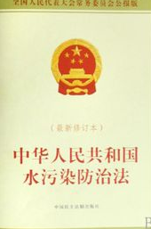

第一节 一般规定
第二十九条 禁止向水体排放油类、酸液、碱液或者剧毒废液。 禁止在水体清洗装贮过油类或者有毒污染物的车辆和容器。
第三十条 禁止向水体排放、倾倒放射性固体废物或者含有高放射性和中放射性物质的废水。 向水体排放含低放射性物质的废水，应当符合国家有关放射性污染防治的规定和标准。
第三十一条 向水体排放含热废水，应当采取措施，保证水体的水温符合水环境质量标准。
第三十二条 含病原体的污水应当经过消毒处理；符合国家有关标准后，方可排放。
第三十三条 禁止向水体排放、倾倒工业废渣、城镇垃圾和其他废弃物。 禁止将含有汞、镉、砷、铬、铅、氰化物、黄磷等的可溶性剧毒废渣向水体排放、倾倒或者直接埋入地下。 存放可溶性剧毒废渣的场所，应当采取防水、防渗漏、防流失的措施。
第三十四条 禁止在江河、湖泊、运河、渠道、水库最高水位线以下的滩地和岸坡堆放、存贮固体废弃物和其他污染物。
第三十五条 禁止利用渗井、渗坑、裂隙和溶洞排放、倾倒含有毒污染物的废水、含病原体的污水和其他废弃物。
第三十六条 禁止利用无防渗漏措施的沟渠、坑塘等输送或者存贮含有毒污染物的废水、含病原体的污水和其他废弃物。
第三十七条 多层地下水的含水层水质差异大的，应当分层开采；对已受污染的潜水和承压水，不得混合开采。
第三十八条 兴建地下工程设施或者进行地下勘探、采矿等活动，应当采取防护性措施，防止地下水污染。
第三十九条 人工回灌补给地下水，不得恶化地下水质。
摘自 http://www.scio.gov.cn/xwfbh/xwbfbh/wqfbh/2015/20150331/xgbd32636/Document/1397628/1397628.htm